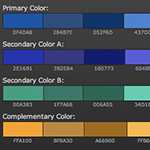
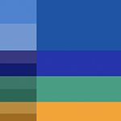

For this project, I chose an accented analagous color scheme with a primary mid-range blue. My two alternate blues are a deeper and more rich purply-blue and a light, pale greenish-blue. My accent color is a strong but not overpowering yellow-gold. I chose these colors to please and ease the eye and convey a sense of stability and integrity. I furthered this concept by utilizing the rigid shapes of my div color blocks as well as the strong use of negative space between. I chose a fairly dark neutral background that had little preconceived meaning and allowed accent and design to be brounght out by my placement and color choice. I emphasized the relationship between the foreground, background, and browser page by editing color box div opacity to show my background image lightly through content as well as utilizing a gradient image blur into the white on the outer edges of the page.

